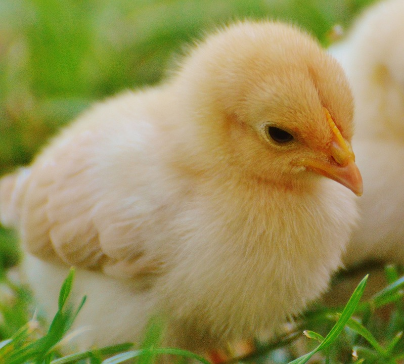

The Standard Schnauzer is a German working dog with a history dating back to the Middle Ages. They have been used as guard dogs, for driving cattle, and to get rid of household pests, like rodents. The breed is lively and intelligent, primarily enjoying active play with members of the family. Their handsome beard and salt & pepper haircoat are two of the breed's most recognizable traits. They enjoy playing and interacting with family members and would do best in a household prepared for an active dog. Standard Schnauzers can be strong willed, so early obedience training is recommended. However, once properly trained, they can be fantastic service or therapy dogs, due to their loving and attentive nature. The breed sheds minimally, but does require regular grooming. Overall, the Standard Schnauzer makes a great companion for families with children of all ages.
